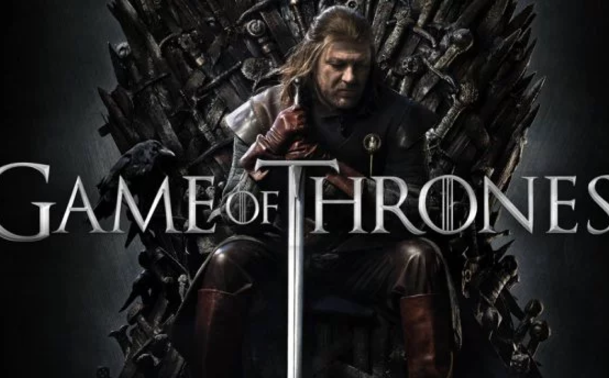
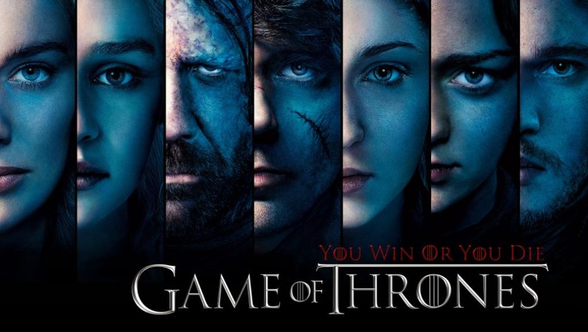

«Игра́ престо́лов» (англ. Game of Thrones) — американский телесериал в жанре фэнтези, основанный на цикле романов «Песнь Льда и Огня» Джорджа Р. Р. Мартина. Снимается под руководством Дэвида Бениоффа и Д. Б. Уайсса для кабельного телеканала HBO. Съёмки ведутся в нескольких странах, включая Великобританию (Северная Ирландия), Мальту, Хорватию, Исландию и Марокко. Премьера первого сезона в США состоялась 17 апреля 2011 года; на 27 августа 2017 года полностью показаны семь сезонов. Показ финального сезона сериала начнется 14 апреля 2019 года.
Действие «Игры престолов» происходит в вымышленном мире, напоминающем средневековую Европу. В сериале одновременно действует множество персонажей и развивается несколько сюжетных линий. Основных сюжетных арок три: первая посвящена борьбе нескольких влиятельных домов за Железный Трон Семи Королевств либо за независимость от него; вторая — потомку свергнутой династии правителей, принцессе-изгнаннице, планирующей вернуть престол; третья — древнему братству, охраняющему государство от угроз с севера.
Телесериал получил высокие отзывы зрительской аудитории, став одним из самых крупнобюджетных проектов на современном американском телевидении и самым дорогостоящим в жанре фэнтези, несмотря на то, что многие критики посчитали избыточным количество ненормативной лексики, натуралистических сцен убийств, эротических сцен и намёков сексуального характера. Вокруг «Игры престолов» возникло обширное фан-сообщество. Сериал удостоен многих престижных наград, в том числе 38 прайм-таймовых премий «Эмми» в различных номинациях, трижды премии «Хьюго» за лучшую постановку, премии Пибоди. Питер Динклэйдж, исполнивший роль Тириона Ланнистера, трижды удостоен премии «Эмми» за лучшую мужскую роль второго плана и премии «Золотой глобус» за лучшую мужскую роль второго плана.